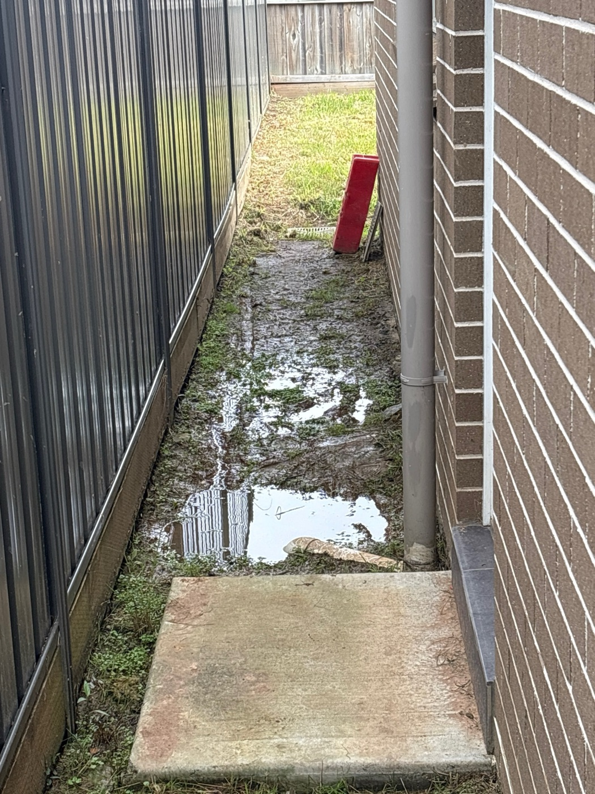
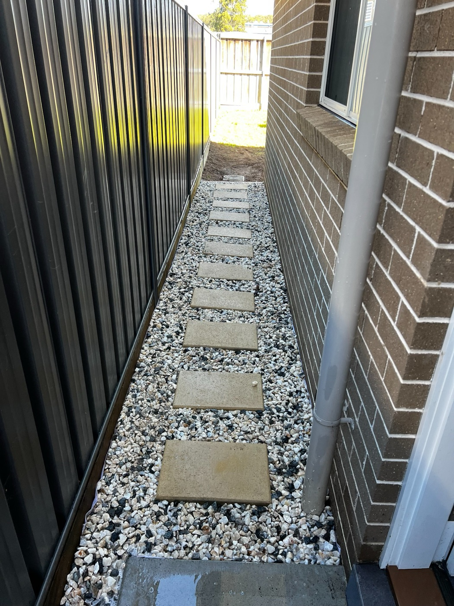

Outdoor improvements
Side Access Path Upgrade
We prepared the narrow side access and installed a clean stepping-stone path with decorative gravel, creating a practical, low-maintenance walkway.
- Suburb
- Gordon
- Job
- Path construction
“KPD Projects were excellent from start to finish. They transformed the side access of our home into a neat, practical walkway and made sure the surrounding garden area was left tidy. The workmanship was clean, the team was easy to deal with, and the finished result looks great. Highly recommend.”